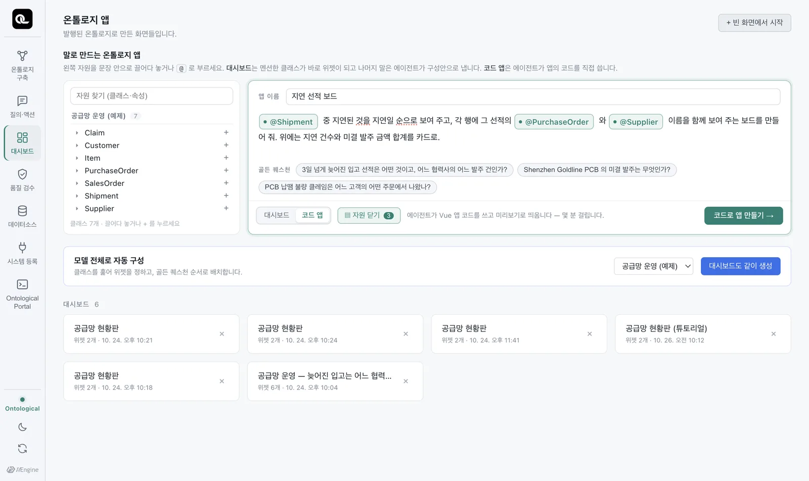
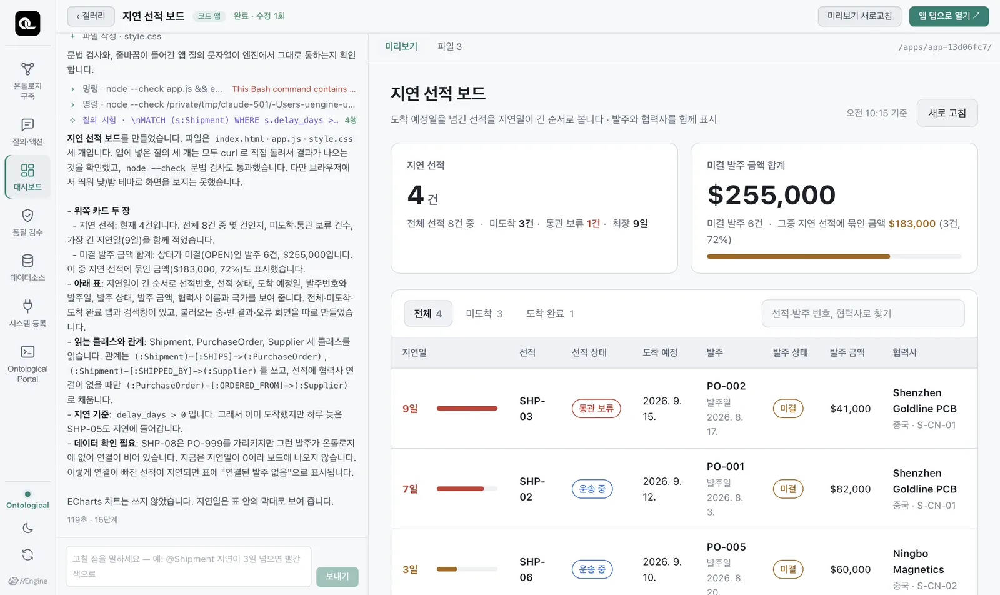
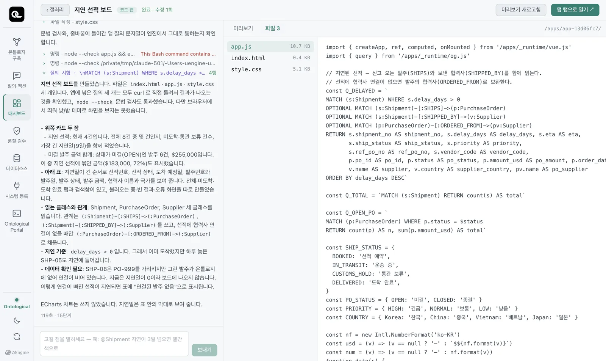

같은 입력창에서 「코드 앱」을 고르면, 코딩 에이전트가 온톨로지 질의를 시험하면서 업무 앱 코드를 작성합니다. 생성된 코드를 확인하고 자연어로 수정한 뒤 앱 탭으로 열어 봅니다.
무엇이 만들어지나#
코드 앱은 빌드가 필요 없는 작은 웹 앱입니다.
| 파일 | 내용 |
|---|---|
index.html |
화면의 뼈대. 런타임(/apps/_runtime/…)을 불러옵니다. |
app.js |
Vue 3 앱 코드. 온톨로지 질의와 화면 로직 |
style.css |
화면 꾸밈. 색은 테마 변수(--og-*)로만 칠합니다. |
앱이 사용하는 라이브러리(Vue 3, ECharts)와 SDK(og.js)는 Ontological Studio에 포함되어 있어 인터넷 없이도 실행됩니다. 데이터는 읽기 전용 Cypher로만 가져옵니다.
따라 하기 — 지연 선적 보드#
- 「온톨로지 앱」 화면에서 「코드 앱」을 고르고, 앱 이름을
지연 선적 보드로 적습니다. - 입력창에 이렇게 적습니다(@는 멘션으로):
@Shipment 중 지연된 것을 지연일 순으로 보여 주고, 각 행에 그 선적의 @PurchaseOrder 와 @Supplier 이름을 함께 보여 주는 보드를 만들어 줘. 위에는 지연 건수와 미결 발주 금액 합계를 카드로. - 「코드로 만들기」를 누릅니다.

코딩 에이전트(여기서는 Claude Code)가 앱 폴더에서 일을 시작합니다. 왼쪽에 무엇을 하는지가 그대로 흐릅니다.
- 질의를 먼저 시험합니다 — 온톨로지에서 Cypher를 직접 실행해 데이터 형식을 확인합니다(「질의 시험 · … 4행」).
- 파일을 씁니다 —
index.html,app.js,style.css. - 문법을 검사합니다 —
node --check app.js. - 보고합니다 — 무엇을 만들었고, 어떤 클래스와 관계를 읽는지, 못 한 것은 무엇인지.

실측으로 121초가 걸렸습니다. 보고서를 읽어 보면 에이전트가 데이터의 이상까지 짚었습니다 — “SHP-08은 PO-999를 가리키지만 그런 발주가 온톨로지에 없어 연결이 비어 있습니다.” 8장에서 OPTIONAL MATCH로 찾았던 그 선적입니다.
코드 읽기#
「파일」 탭에서 코드를 봅니다. app.js의 핵심은 Cypher 문자열과 query() 호출입니다(아래는 실제로 만들어진 코드에서 몇 줄을 줄여 옮긴 것입니다).

import { createApp, ref, computed, onMounted } from '/apps/_runtime/vue.js'
import { query } from '/apps/_runtime/og.js'
// 지연된 선적 — 싣고 오는 발주(SHIPS)와 보낸 협력사(SHIPPED_BY)를 함께 읽는다.
const Q_DELAYED = `
MATCH (s:Shipment) WHERE s.delay_days > 0
OPTIONAL MATCH (s:Shipment)-[:SHIPS]->(p:PurchaseOrder)
OPTIONAL MATCH (s:Shipment)-[:SHIPPED_BY]->(v:Supplier)
OPTIONAL MATCH (p:PurchaseOrder)-[:ORDERED_FROM]->(pv:Supplier)
RETURN s.shipment_no AS shipment_no, s.delay_days AS delay_days, s.eta AS eta,
s.ship_status AS ship_status, p.po_id AS po_id, p.amount_usd AS po_amount,
v.name AS supplier, pv.name AS po_supplier
ORDER BY delay_days DESC`
const Q_OPEN_PO = `
MATCH (p:PurchaseOrder) WHERE p.status = $status
RETURN count(p) AS n, sum(p.amount_usd) AS total`
// …
const [delayed, open] = await Promise.all([
query(Q_DELAYED),
query(Q_OPEN_PO, { status: 'OPEN' }),
])
4부에서 배운 Cypher가 그대로 들어 있습니다. OPTIONAL MATCH로 짝이 없는 선적도 남기고, $status 같은 매개변수로 값을 따로 넘깁니다. 코드 앱은 ontology 그래프(발행된 온톨로지)를 읽으므로, sample에는 없는 SHIPPED_BY 관계도 씁니다.
말로 고치기#
왼쪽 아래 입력창에 고칠 점을 말하면, 같은 에이전트 세션이 이어서 고치고 미리보기가 다시 뜹니다. 멘션도 됩니다.
지연이 3일 넘는 @Shipment 은 빨간 배지로 강조하고, 맨 위에 전체 미결 금액 합계를 크게 보여 줘
시연에서는 이런 수정이 약 70초 걸렸습니다. 상단의 「완료 · 수정 2회」처럼 몇 번 고쳤는지가 보입니다.
앱 탭으로 열기#
오른쪽 위 「앱 탭으로 열기」를 누르면 만든 앱이 Studio 옆에 독립된 탭으로 뜹니다. 업무 화면처럼 쓰면 됩니다. 홈의 최근 항목에도 남습니다.
에이전트가 지키는 규칙#
코딩 에이전트는 앱 폴더의 AGENTS.md(Claude Code는 CLAUDE.md) 규칙을 따릅니다. 주요 내용:
- 이 폴더 하나가 앱 하나. 폴더 밖을 읽거나 고치지 않는다.
- 빌드 도구(npm, Vite)와 외부 CDN을 쓰지 않는다 — 오프라인에서도 떠야 한다.
- 데이터는 온톨로지에서만. 목 데이터·하드코딩 금지, 없는 것은 없다고 화면에 쓴다.
- 질의는 쓰기 전에 반드시 직접 시험한다.
- 값을 바꾸는 일은 액션 버튼으로만(20장).
- 낮/밤 두 테마에서 모두 읽혀야 한다. 불러오는 중·빈 결과·오류를 각각 보여 준다.
- 끝나면 한국어로 무엇을 만들었는지 보고하고, 못 한 것은 못 했다고 쓴다.
실습 과제
- “협력사별 미결 발주 금액과 늦어지는 선적을 한눈에 보는 협력사 리스크 보드. 협력사 카드를 누르면 그 협력사의 발주와 선적 목록이 열리게”를 코드 앱으로 만들어 보세요.
- 만들어진
app.js에서 Cypher를 하나 골라 포털(그래프ontology)에 붙여 넣고 실행해, 앱의 숫자와 같은지 확인하세요. - 말로 한 가지 고쳐 보고, 「파일」 탭에서 무엇이 바뀌었는지 찾아보세요.